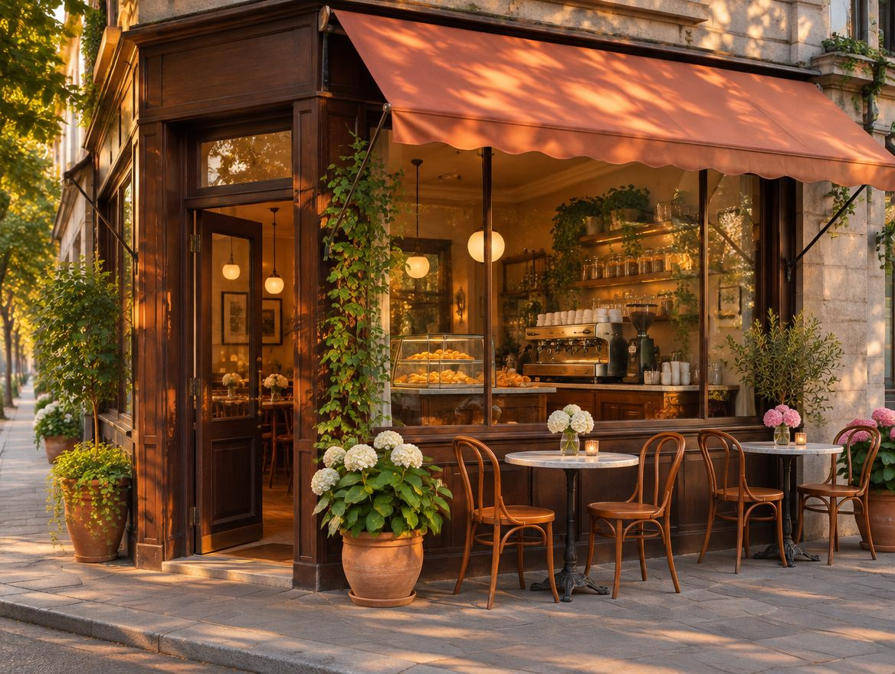
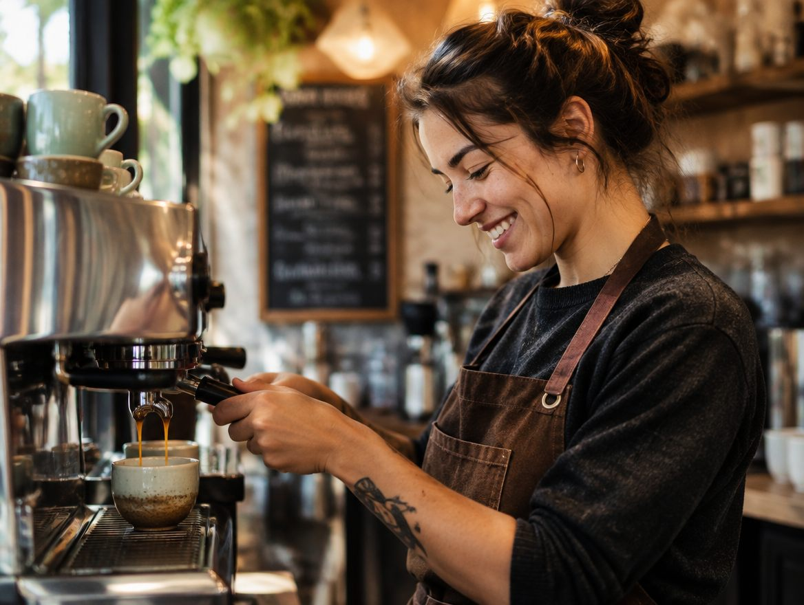
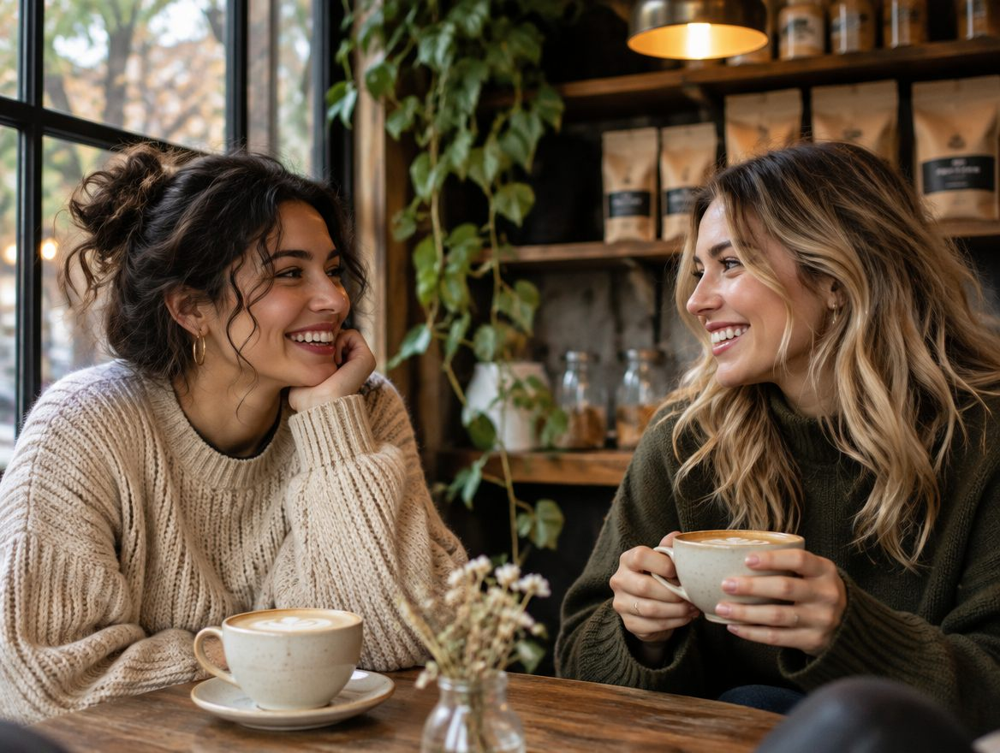
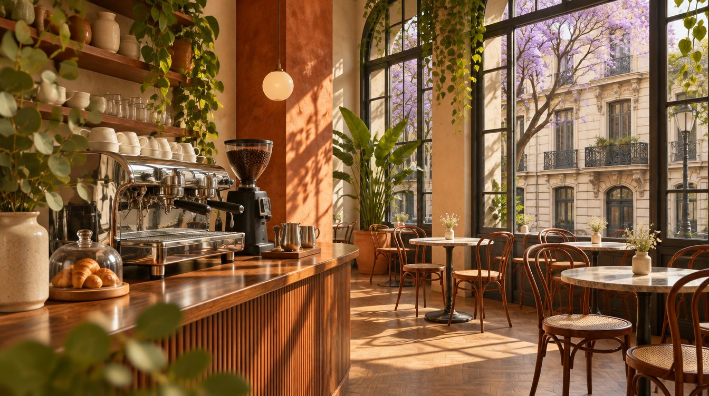

Granos de origen
Trabajamos directo con fincas de Colombia, Etiopía y Brasil. Trazabilidad real, precio justo.
Tostamos en casa granos de pequeños productores y los acompañamos con pastelería artesanal horneada cada madrugada.
Trabajamos directo con fincas de Colombia, Etiopía y Brasil. Trazabilidad real, precio justo.
Tostamos en lotes chicos cada semana para que tomes siempre café fresco, con su mejor aroma.
Medialunas, budines y tortas hechas a mano, con manteca de verdad y sin apuro.

Tostado nació en 2016 con una máquina usada, una idea simple y mucha terquedad: que el buen café no tiene por qué ser pretencioso. Hoy seguimos siendo una esquina donde el barista sabe cómo te gusta el café y las mesas siempre tienen lugar para una charla larga.
Cada taza cuenta de dónde viene el grano, quién lo cultivó y cómo lo tostamos. Vení a probarlo.
¿Más intenso, más suave, con leche vegetal? Nuestro equipo está capacitado para recomendarte el método y el grano que mejor van con tu gusto. Todos los sábados hacemos cataduras abiertas, sin costo.
Sumate a una catadura
“El mejor flat white de Palermo, sin dudas. Y las medialunas, un escándalo.”
“Lindo lugar para trabajar con la compu. Buen wifi, buena música y mejor café.”
“Vinimos por el cheesecake y nos quedamos tres horas. Atención de diez.”


Completá el formulario y te confirmamos por WhatsApp en minutos.